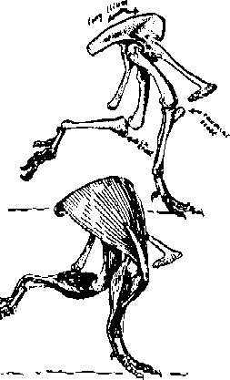

Sauropods, Elephants, Weightlifters
Allometry
by Wayne Throop
al.lom.e.try \*-'la:m-* -tre-\ n : relative growth of a part in relation to an entire organism; also : the measure and study of such growthTed's position is based on isometric scaling. He simply presumes that Kazmaier's skeleton has the best structure for lifting, and then proceeds with a form of square-cube scaling which predicts how an animal identically shaped to Kazmaier could perform at various masses.
Several people have looked at the biomechanics of sauropods or other dinosaurs from an allometric point of view. Among them are
Hokkanen
Hokkanen's paper uses various allometric relationships to project the size of the largest possible land animal. In the section where he uses muscle mass allometries, he is doing very nearly the same calculation that Ted is doing, except he isn't making the mistake of assuming that human skeletal structure is the best possible.Allometric relationships are the ratio of some pair of measures of an animal, normally expressing some measure as a function of the mass. It turns out that these functions are normally exponentials, that is,
x = c*M^pthe quantity x being measured is the mass M of the animal, to some power p, times some constant c. In isometric cases (that is, where the shape and density remains identical and only the mass changes), rules for cross section and leverage would be
x = c1*M^(2/3)Since effective strength is muscle strength time leverage, and since muscle strength is limited by cross section, strength limits would then go by a simple square-cube scale. We can see that an allometric rule for the force (mass in 1g plus load) for constant shape and density would be
l = c2*M^(0)
(M+L) = F = c1 * M^(2/3)which is just Ted's Holden Numbering scheme, so we see that Hokkanen is using a generalized form of the same sort of projection Ted uses.
But actual animal shapes don't remain constant over changing sizes. Hokkanen found actual allometric relationships in current four-footed herbivores for muscle cross section and leverage, expressed them all as functions of animal mass, and simplified, yielding
Mmax = c * M^.83That is, the greatest amount of mass an animal can lift in 1g (Mmax) is related to the mass of the animal by an exponent of .83, and a constant. We can find out what the constant is by proposing a strongest animal in a familiar weight range, which Hokkanen took to be a 50kg animal capable of lifting 200kg in 1g. Project this to the point where an animal with standard allometries could lift only its own mass, we have the largest possible mass of such an animal.
200 = c * 50^.83To further verify that his exponent of .83 makes sense, Hokkanen also compared references from space research, on how the maximum survivable gravity is related to animal mass. He found that the maximum acceleration Gmax in which an animal in a centrifuge can live scales as
c = 200/50^.83 ~= 7.78
Mmax = 7.78 * Mmax^.83
Mmax = 7.78^(1/.17) ~= 170,000 kg ~= 374,000 lbs mass
Gmax = k1 * M^(-.14)because gravity and the Hokkanen scaling are related by
M*Gmax = k2 * c * M^0.86This means that a completely independent line of research verifies with the error bars given in the paper that the allometric laws Hokkanen was using do indeed represent the correct scaling for the largest animal that can survive a given acceleration. (Hmmmm. Error bars on an exponent? I won't go into that... except to note that projecting Mmax using 0.86 instead of 0.83, we get a million kilograms, which is well above Ted's ultrasaur figure.)
Ted dismisses Hokkanen's paper
But there are several reasons why Hokkanen's paper is to be prefered over Holden Numbering.From: medved@access5.digex.net (Ted Holden) Message-ID: <medved.803322650@access5> I can't believe the journal even published anything so transparant and so utterly lacking in any trace of a connection to anything real.
- Hokkanen's projection is based in the same general family of animal shapes (ie: 4-footed herbivores), and so no issues of 2-footed vs 4-footed performance arise, nor issues of steroid use in human weightlifters. It is purely based on how strong animals plausibly are, plus some simple biomechanics.
- It uses scaling based on actual measurement of actual animals of actual different masses, rather than depending on isometry and the known-false assumption that Kazmaier's shape is the best possible.
- Other independent lines of research get the same allometric law.
In a further criticism of Hokkanen from one of Ted's web pages, Ted says
Allometric parameters for known animals, the entire basis of the study, are based upon the assumption of today's gravity. If it were true (and it is) that the model of the antique system which I, David Talbott, Ev Cochrane, and others adhere to is the correct one, then an estimate of allometric parameters for a sauropod based on today's realities could not possibly be valid. This in fact amounts to another case of circular reasoning.This, of course, completely misses the point. The numbers Hokkanen uses aren't based on an "assumption" of today's gravity; they aren't based on assumptions at all. They represent actual measurements of changes in the proportions of 4-footed animals over mass. Nor are the numbers estimated dinosaur numbers, and so using those numbers does not constitute a case of circular reasoning. It is a demonstration that sauropod-sized animals could be strong enough to stand in 1g, even using current animals' values for bone and muscle strength, and even using current animals' values for proportional size of sauropod-sized animals.
Further, Ted says that
We note at once that the entire process will be very sensative to small changes in the short distance Dp and that estimates of Dp for sauropods could not be much more than guesswork.and
The dependence upon the short distance Dp in his model is probably ill-conditioned. Certainly, this distance could not be known accurately in the case of sauropods.and again totally misses the point. Earlier Ted claimed that there is "not enough leverage in the world" to explain sauropod performance, then turns right around and shows that, indeed, there is plausibly enough leverage, exactly because the force applied by a joint is sensitive to Hokkanen's Dp parameter. Ted claims that "this distance could not be known accurately in the case of sauropods" is a direct admission that they he has not ruled out sauropods having sufficient leverage advantage. Ted also brings up his interesting if largely baseless theory of "large animals getting musclebound"
The use of a maximal stress per cross-section of muscle figure is a gross oversimplification. In particular, it leaves out the entire question of friction and muscle binding which have to increase as creatures become progressively more bulky and powerful.and
Hokkanen may or may not be leaving out a trigonometric function since the tricep muscle shown is not pulling straight away on the bone attachment.There is zero evidence of this "friction" Ted talks about being any problem whatsoever. But we can quantify an upper bound on the effect of the "trigonometric problem" Ted is talking about. Presume the effective angle involved is that from the outside of the limb to the center of the limb. Going from Ted's images of Kazmaier, that means that the limb is on the order of twice as long as wide, and that'd be an effect of less than 6%. And that's the difference between Kazmaier and a limb of zero width. Between Kazmaier and a limb of half the muscle mass, the difference is well under 4%. We see that even doubling limb cross section only changes this effect by a couple percent, thus this alleged effect, even if practically detectable at all, is clearly not of any major significance, compared to limb leverage and muscle cross section.
All in all, Ted does not show an adequate understanding of the points Hokkanen is making, nor a quantitative understanding of the points he himself makes, and so does not provide a persuasive criticism of Hokkanen.
Alexander and Thulborn
In response to a recent query on whether sauropod bone sizes could be used as a check on Ted's hypothesis.Peter Lamb presented bone allometry data gotten from several sources.From: "RICHARD G. PETERSEN" <rgp66@aztec.asu.edu> Then it would probably be true that the combined cross-sectional area of the femur and the humerus bears some reasonably constant relationship to the bodily weight for heavy, lumbering animals such as bison, oxen, yaks, draft horses and elephants. In principle this hypothesis can be checked.
From: prl@cbr.dit.csiro.au (Peter Lamb)
Message-ID: <D9s0sL.Hps@cbr.dit.csiro.au>
Data that might be considered in this context can be found in the
Alexander book that Wayne mentioned (which is a really good
introduction to how the dynamics of fossil animals are studied) and
from Thulborn's "Dinosaur Tracks" (Chapman & Hall, 1990).
This is what was in an earlier posting:
There is considerable variation in the estimates for some
dinosaurs; Thulborn[1, p245] gives four masses for
Brachiosaurus, and there's an additional one in Alexander[2, p25]:
Original Mass How measured[secondary source]
Source
Colbert 78t volumetric[1]
Alexander 46t volumetric[2]
Bakker 40t ??[1]
Anderson 29t allometric[1]
Russell 15t allometric[1]
... [However,] there are, of course, examples which show a
(small) difference in the opposite direction between
allometric and volumetric measurements, eg. Anderson, 37t
vs. Colbert 33t for Apatosaurus louisae[2, p25]. Even using
just volumetric methods, there are sufficient differences
in the specimens and how the model is derived from the
skeleton, that there can be considerable variation, eg.
Colbert 11.7t, Alexander 18.5t for Diplododocus
carnegiei[2, p25].
From those figures (ignoring Bakker's figure for the moment because
the Sci. Am. article in which it appears doesn't say how it was derived nor,
in the Sci. Am. house style, give a reference), you can get figures of
"g" ranging from 0.2 to 0.6 of the present value.
If we take all the data in Alexander where there are both volumetric and
allometric estimates, we get:
Species Colbert Alex. Anderson "g(then)/g(now)"
volum. volum. allom.
Allosaurus fragilis 2.3 - 1.4 0.6
Tyrannosaurus rex 7.7 7.4 4.5 0.6, 0.6
Diplodocus carnegiei 11.7 18.5 5.8 0.5, 0.3
Brachiosaurus brancai 87.0 46.6 31.6 0.4, 0.7
Apatosaurus louisae 33.5 - 37.5 1.1
'Anatosaurus' copei 3.4 - 4.0 1.2
Styracosaurus albertensis 4.1 - 4.1 1.0
(NB: Alexander has corrected some of the figures from the data he cites.
That's why there are different numbers in this table from the one above.
See Alexander for details)
Caution is to be exercised in reading too much into these figures.
Consider also from Alexander: "The estimates that the [allometric mass]
equation would give us are 1.2 tonnes for the 2.0-tonne hippopotamus
and 9.0 tonnes for the 5.9 tonne elephant." These would correspond to
"g(then)/g(now)" figures of 0.6 and 1.5 respectively.
Alexander points out that the allometric measures of bone size used to
get these figures cannot isolate the static forces for supporting the
animal from the dynamic forces generated by its lifestyle. A sloth may
not generate the sort of dynamic forces in its long bones that you'd
find in a horse or an antelope, even when you correctly scale for
size.
Thulborn also addresses another possible weight measure to compare
with volumetric mass measures that is sometimes proposed in t.o:
"Theoretically, the weight of a dinosaurian trackmaker should
be related to the surface area and depth of its footprints.
But, in practice, those relationships involve so many
imponderables, such as the behaviour of the trackmaker and the
physical properties of the substrate, that they cannot be used
to predict the track-maker's weight." Thulborn, [1, p246]
While I agree that "Caution is to be exercised in reading
too much into these figures", I would still say (despite
the outlying value of .3 in that last table) that these
numbers are fully consistent with sauropod dinosaurs having
existed in 1g acceleration, and quite inconsistent
with sauropod dinosaurs having existed in the levels needed
for Ted's theory to make sense (specifically, Ted's claims
of .3g and lower).
Bakker

Bakker's treatment of the issue is simple and straightforward. He notes that the cross sectional areas of tendon attachment points are proportional to the force that the muscles exert via those tendons. The muscles themselves are not preserved, but the tendon attachment points leave scars on the bones, and are thus preserved. One specific tendon marker Bakker was concerned with is the cneimal crest, on the shin. Bakker says[tDH] page 217In addition, the attachment point on the pelvis for the knee extensors is the "ilium", and it, too, is of exaggerated size relative to mass in dinosaurs. Bakker shows the relevant musculature of a ceratopsian leg in a diagram (seen here).
All dinosaurs had bigger cneimal crests than do elephants, even those groups with relatively straight hind legs -- the giant horned dinosaurs, stegosaurs, and brontosaurs. When these systems of oversized knee muscles contracted, the power exerted on the hind paw would have had no equal today.
{kind=link}
Bakker's position is, the cross section of tendon
attachment points implies that dinosaurs limbs were
subjected to forces equivalent to those running and walking
in 1g. It is rather direct evidence against there having
been any lower "felt effect of gravity" as Ted claims
necessary.
[Prev] |
[Top] |
[Next] |
| The FAQ | Must-Read Files | Index | Creationism | Evolution | Age of the Earth | Flood Geology | Catastrophism | Debates |